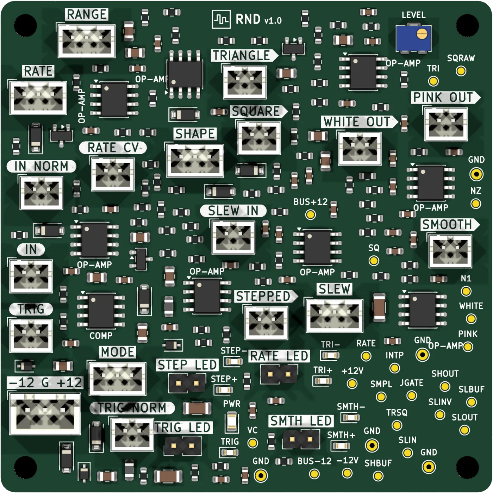
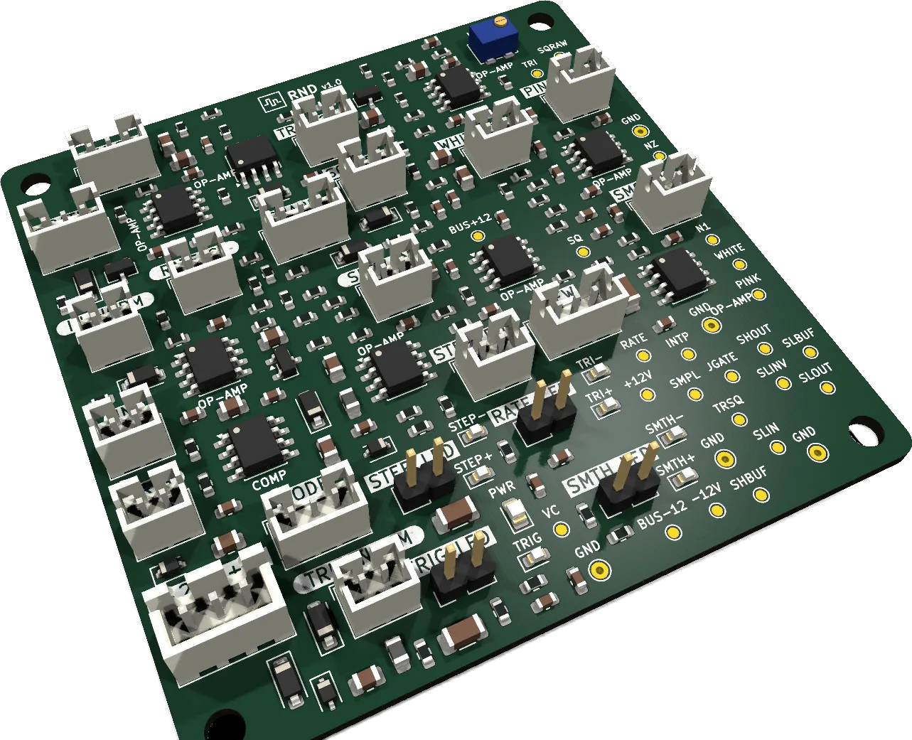
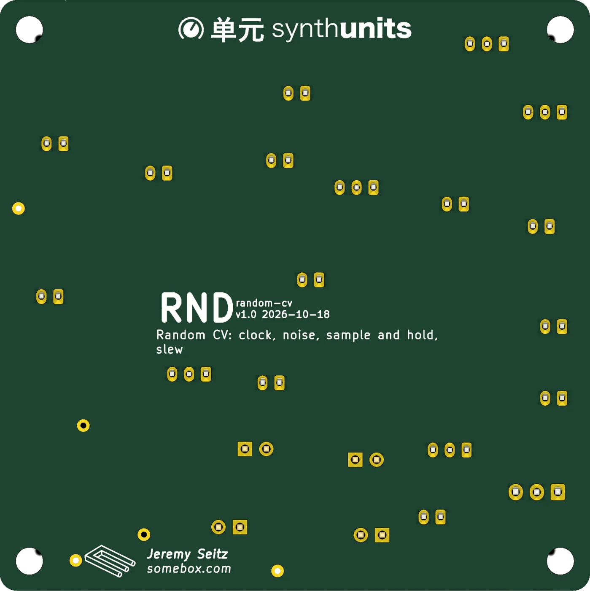
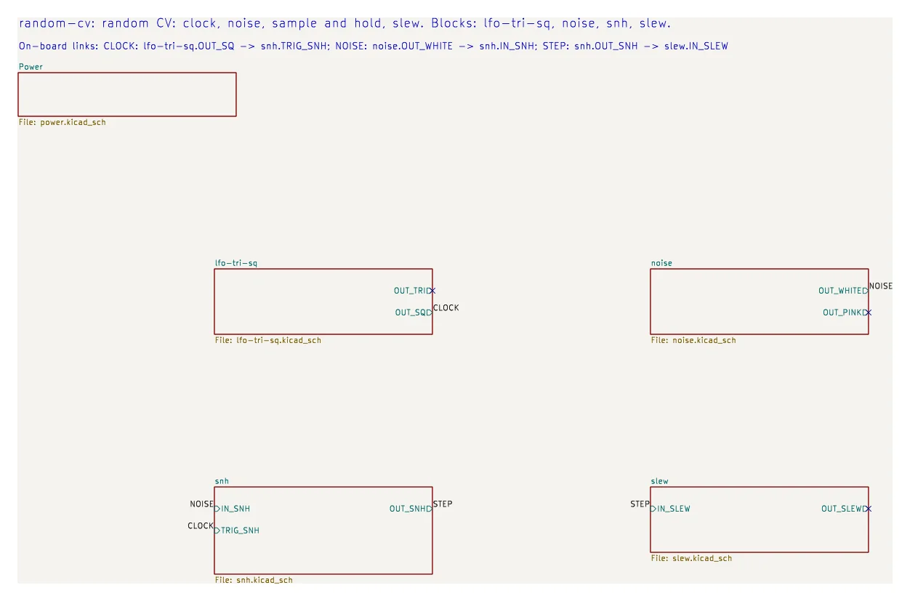
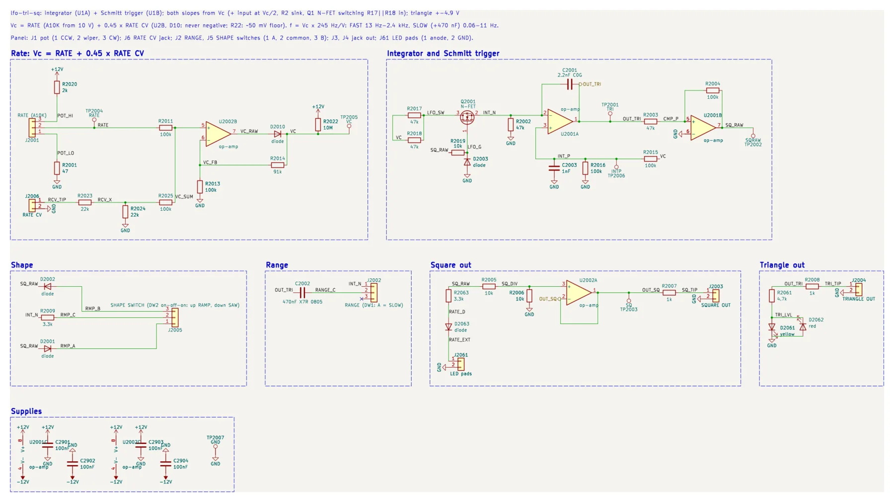
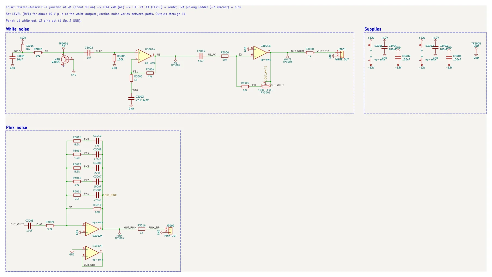
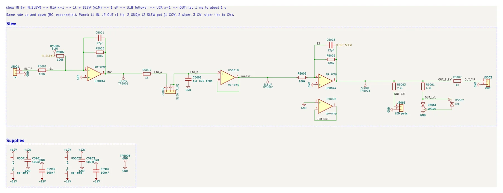
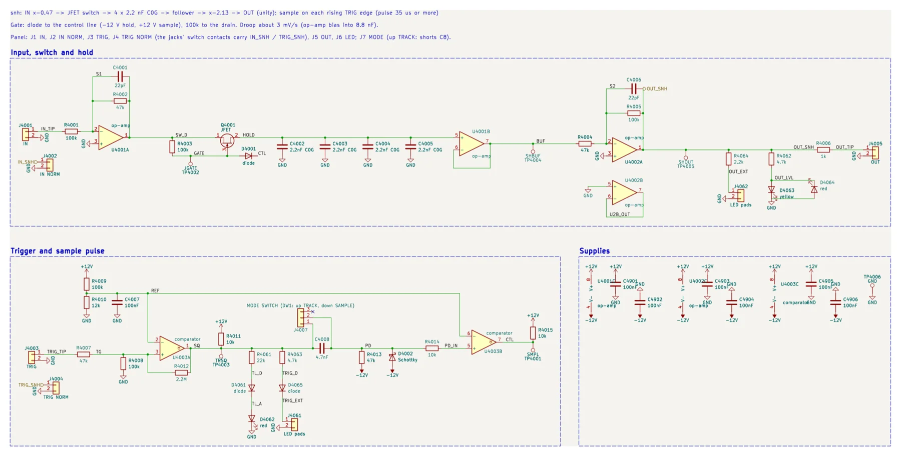

Random CV: clock, noise, sample and hold, slew
A random voltage source: an LFO clocks a sample and hold fed with noise, and a slew smooths the steps.
A random voltage source on one 70 × 70 mm board, built from four of the series' blocks: an LFO clocks a sample and hold, a noise source feeds it, and a slew limiter smooths the steps. Out come a stepped random CV and a smooth one, with RATE setting how often it changes and SLEW how slowly it glides.
Every block keeps its own jacks, so the parts can be patched apart: the LFO's triangle and square, white and pink noise, the S&H with its input and trigger, and the slew. The S&H's IN is normalled to the white noise and its TRIG to the LFO's square; a cable in either takes over.
The idea is the classic random source, after the Buchla 266 Source of Uncertainty as a concept; the circuits are the blocks the other boards use.
- Status
- In design: parts placed, not routed yet
- Board
- 70 × 70 mm, 2 layers



Block diagram
Drawn by the site's generator from the board's own data: its blocks, its connectors and the links between them. The pots and switches are listed in the block they set.
What it does
- Clock: the LFO, SLOW about 0.06 to 11 Hz or FAST 13 Hz to 2.4 kHz, on RATE (Alpha 9 mm A10K) and RATE CV.
- STEPPED: a new random value at each rising clock edge (in TRACK mode, following while the clock is high), unity from the S&H, through 1 kΩ. Its spread follows the noise level, about 1.3 V rms.
- SMOOTH: the steps glided with a time constant from 1 ms to about 1 s on SLEW (Alpha 9 mm A1M), exponential and the same up and down (simulated).
- Also out: TRIANGLE, SQUARE, WHITE and PINK, as on the LFO and noise boards.
- Inputs: RATE CV (44 kΩ), IN (100 kΩ, ±10 V), TRIG (high above about 2.2 V), SLEW IN (100 kΩ).
- Power: roughly 25 mA on each rail, estimated from the circuit.
- Board: 70 × 70 mm, 2 layers, four M3 holes.
Connections
| Connector | Wire to | Housing | Pins |
|---|---|---|---|
| POWER (1 -12V, 2 GND, 3 +12V) | a the power board output (straight-through JST XH lead) | JST XH, 3 pins, top entry | 1 −12 V, 2 GND, 3 +12 V |
| RATE (A10K) | a pot (Alpha 9 mm A10K) | JST PH, 3 pins, top entry | 1 CCW, 2 wiper, 3 CW |
| RANGE (DW1: A = SLOW) | a toggle switch | JST PH, 3 pins, top entry | 1 A, 2 common, 3 B |
| SQUARE OUT | a jack (Thonkiconn) | JST PH, 2 pins, top entry | 1 tip, 2 GND |
| TRIANGLE OUT | a jack (Thonkiconn) | JST PH, 2 pins, top entry | 1 tip, 2 GND |
| SHAPE SWITCH (DW2 on-off-on: up RAMP, down SAW) | a toggle switch | JST PH, 3 pins, top entry | 1 A, 2 common, 3 B |
| RATE CV | a jack (Thonkiconn) | JST PH, 2 pins, top entry | 1 tip, 2 GND |
| WHITE OUT | a jack (Thonkiconn) | JST PH, 2 pins, top entry | 1 tip, 2 GND |
| PINK OUT | a jack (Thonkiconn) | JST PH, 2 pins, top entry | 1 tip, 2 GND |
| IN | a jack (Thonkiconn) | JST PH, 2 pins, top entry | 1 tip, 2 GND |
| IN NORM | panel-jack J2 (the jack's switch contact) | JST PH, 2 pins, top entry | 1 normal, 2 GND |
| TRIG | a jack (Thonkiconn) | JST PH, 2 pins, top entry | 1 tip, 2 GND |
| TRIG NORM | panel-jack J2 (the jack's switch contact) | JST PH, 2 pins, top entry | 1 normal, 2 GND |
| STEPPED (OUT) | a jack (Thonkiconn) | JST PH, 2 pins, top entry | 1 tip, 2 GND |
| MODE SWITCH (DW1: up TRACK, down SAMPLE) | a toggle switch | JST PH, 3 pins, top entry | 1 A, 2 common, 3 B |
| SLEW IN (IN) | a jack (Thonkiconn) | JST PH, 2 pins, top entry | 1 tip, 2 GND |
| SLEW (A1M) | a pot (Alpha 9 mm A1M) | JST PH, 3 pins, top entry | 1 CCW, 2 wiper, 3 CW |
| SMOOTH (OUT) | a jack (Thonkiconn) | JST PH, 2 pins, top entry | 1 tip, 2 GND |
Every panel control has its own connector with a fixed pinout, so any lead of the right size fits any module. Pin 1 is the square pad.
LEDs
On the board: PWR (green), TRI+ (yellow), TRI- (red), TRIG (red), STEP+ (yellow), STEP- (red), SMTH+ (yellow), SMTH- (red). Pads for a panel LED: RATE LED, TRIG LED, STEP LED, SMTH LED.
Wiring and setup
- Power: a 3-pin JST XH lead (1 −12 V, 2 GND, 3 +12 V) from one of the power hub's outputs, with a ferrite and a series Schottky on each rail. Check each lead with a meter first.
- Panel: 10 jacks (RATE CV, TRIANGLE OUT, SQUARE OUT, WHITE OUT, PINK OUT, IN, TRIG, STEPPED, SLEW IN, SMOOTH), 2 Alpha 9 mm pots (RATE A10K, SLEW A1M) and 3 toggles (RANGE on-on, SHAPE on-off-on, MODE on-on), each on its own top-entry JST PH connector.
- Normals: wire the IN and TRIG jacks' switch contacts to IN NORM and TRIG NORM, and the noise and the LFO reach the S&H while nothing is patched.
- The slew's input is wired to STEPPED on the board, and SLEW IN sums with it: a signal patched there is added to the steps, not swapped for them.
- LED pads, each with its own resistor: RATE LED (blinks with the clock), TRIG LED, STEP LED and SMTH LED (the last two bipolar: a two-lead bicolour LED, or two LEDs back to back).
- No LINK connector. The noise LEVEL trimmer sets the random spread: about 1.3 V rms, set by ear or with a meter.
Limits and open questions
- A placement mockup: the parts are placed, the board isn't routed. Not built.
- The slew is an RC lag: exponential, not linear, with the same rise and fall. Separate rise and fall times would take another block.
- What the LFO and noise boards list applies here too: the noise level varies with the transistor, the clock drifts a little with temperature and follows the +12 V rail, and the hold's droop is unmeasured.
Development notes
- Nothing on this board is new circuitry: it is generated from four blocks and the three links between them (clock, noise and steps).
- Next: route it once the first boards are built and proven.
Schematic
The schematic as drawn, with each chip named by its function rather than its part number. The design isn't open source yet, so there are no files to download.











Would you use a RND? A thumbs-up on its tracking issue is how I count interest, and you can subscribe there to follow its bring-up. Questions and ideas go to the discussions.